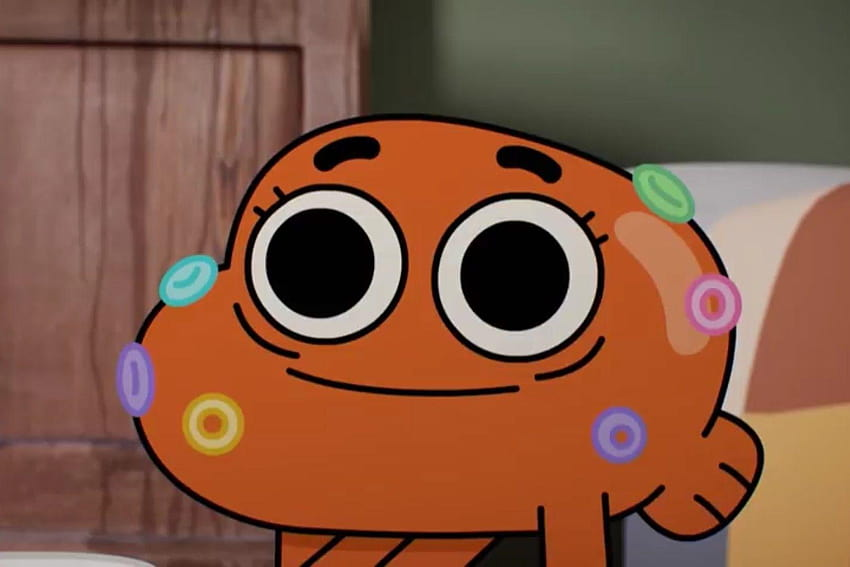
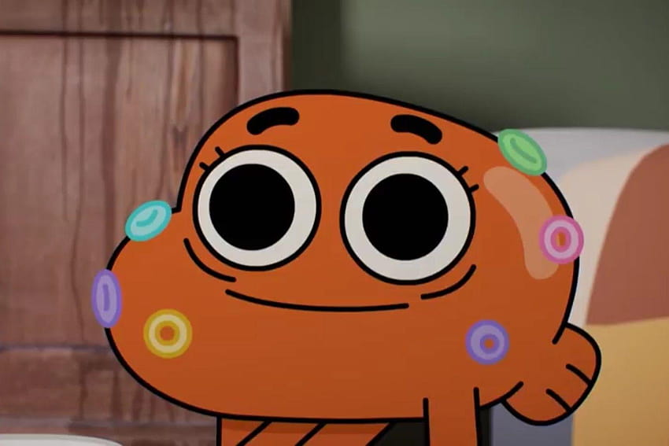

GUMBALL WATTERSON
Gumball (anteriormente Zach) Tristopher Watterson é o protagonista de O Incrível Mundo de Gumball. Ele é um gato azul de 12 anos de idade que estuda na Escola de Elmore com seu irmão adotivo de dez anos de idade, chamado Darwin e sua irmã gênio de apenas quatro anos de idade chamada Anais.
DARWIN WATTERSON
 

Darwin Watterson é um personagem da série de animação O Incrível Mundo de Gumball (The Amazing World of Gumball), criada por Ben Bocquelet e exibida pelo canal Cartoon Network. Ele é o melhor amigo e irmão adotivo de Gumball Watterson, o protagonista da série.
Darwin é um peixe dourado com pernas que inicialmente era apenas o animal de estimação da família Watterson, mas um dia ele desenvolveu pernas e começou a andar e falar, se tornando um membro da família. Com uma personalidade inocente, leal e gentil, Darwin é conhecido por sua visão positiva da vida e por seu grande coração. Ele frequentemente age como a voz da razão e da empatia, contrastando com o comportamento impulsivo e caótico de Gumball.